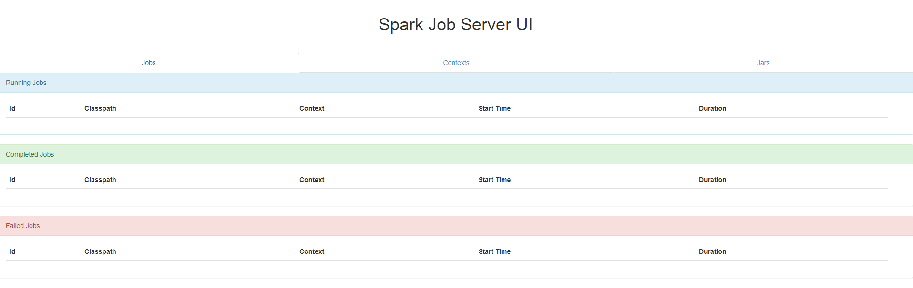
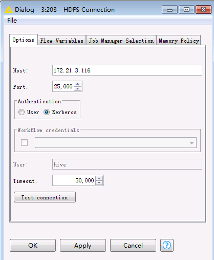

Knime 对接FusionInsight¶
适用场景¶
Knime 3.6.1 ↔ FusionInsight HD V100R002C80SPC200 (HDFS/Hive/Spark)
Knime 3.6.1 ↔ FusionInsight HD 6.5 (HDFS/Hive)
环境准备以及Knime下载¶
环境准备¶
-
安装JDK8

-
配置系统环境变量
JAVA_HOME= C:\\Program Files\\Java\\jdk1.8.0_112
-
在PATH环境变量添加
%JAVA_HOME%\bin;%JAVA_HOME%\jre\bin;
下载Knime¶
-
在Knime官网
https://www.knime.com/downloads/download-knime选择合适的安装包进行下载.
下载Knime extension¶
- 在菜单栏
File->Install Knime extensions - 搜索
big data,在结果中选择KNIME Big data Extensions,然后next
accept licence,点击finish开始安装.
- 在右下角可以看到安装进度

- 安装完成后重启Knime
配置Knime¶
-
获取集群的
hdfs-site.xml和core-site.xml文件，保存在本地. -
在Knime的安装目录中，修改配置文件“knime.ini”,在末尾添加一行
`Djava.security.krb5.conf=path\to\krb5.conf`
-
双击
Knime.exe，启动Knime -
在菜单栏选择
File->Preference->KNIME->Big Data->Hadoop，在Hadoop Configuration中填入本地保存的HDFS的hdfs-site.xml和core-site.xml文件,点击Apply and Close保存配置。
-
在菜单栏选择
File->Preference->KNIME->Big Data->Kerberos，填入kerberos认证用户名和本地keytab文件的路径，并选择Enable Kerberos Logging,点击Apply and Close保存配置。
Knime连接HDFS¶
前提条件¶
-
已经完成Knime 3.6.1的安装
-
已完成FusionInsight HD和客户端的安装，包含HDFS组件
-
已完成本机的Kerberos认证
建立HDFS连接¶
-
在Knime菜单栏中选择
File->New->New KNIME Workflow,命名后保存。
 * 在Node Repository中搜索
* 在Node Repository中搜索HDFS
-
将
HDFS Connection节点拖入工作区
-
双击
HDFS Connection节点，填写如下配置：- Host: NameNode主节点
- Port: 25000
-
Authentication: Kerberos

-
点击
Test connection,显示如下，表示连接成功
 - 点击
- 点击Apply，保存配置
读取HDFS文件¶
-
在工作区中拖入
Download节点，将其与HDFS Connection相连
-
双击
Download节点，选择要从HDFS文件系统下载的文件以及文件的本地保存路径
-
点击
Apply，保存配置 -
点击菜单栏中的
 执行任务
执行任务 -
查看本地文件

上传文件至HDFS¶
-
将要上传的文件放在本地的一个文件夹中，例如
C:\KnimeData
-
在工作区中拖入
List Files,String to URI以及Upload节点，将其进行如下连接
-
双击
List Files节点，选择要上传文件的本地路径，点击Apply，保存配置
-
双击
Upload节点，选择在HDFS中文件保存的路径，点击Apply，保存配置
-
点击菜单栏中的
执行任务 -
在服务器上查看HDFS文件系统中所上传的文件

Knime连接Hive¶
前提条件¶
-
已经完成Knime 3.6.1的安装
-
已完成FusionInsight HD和客户端的安装，包含Hive组件
-
已完成本机的Kerberos认证
建立Hive连接¶
-
在Knime菜单栏中选择
File->New->New KNIME Workflow,命名后保存。
-
在工作区中拖入一个
Hive Connector节点
-
双击
Hive Connector节点，填写如下配置：- Hostname: HIve主节点
- Port: 21066
- Parameter:
principal=hive/hadoop.hadoop.com@HADOOP.COM;saslQop=auth-conf;auth=KERBEROS; - Authentication: Use Kerberos

- 点击
Apply，保存配置
写入Hive表¶
-
在工作区中拖入以下几个节点，并进行如下连接

- 其中
HDFS Connection节点配置参考上节中建立HDFS连接，点击Apply保存配置

File Reader节点中选择本地将要上传的文件，点击Apply保存配置

Hive Loader节点中选择文件要上传至服务器的路径以及表名，点击Apply保存配置

- 其中
-
点击菜单栏中的
执行任务 -
在服务器上查看导入Hive中的表


Knime连接Spark¶
前提条件¶
-
已经完成Knime 3.6.1的安装
-
已完成FusionInsight HD和客户端的安装，包含Spark2x组件
-
已完成本机的Kerberos认证
安装spark-job-server¶
此部分可参考KNIME官方文档https://download.knime.org/store/3.6/knime_extension_for_apache_spark_2.3.0.pdf
-
打开
https://www.knime.com/knime-extension-for-apache-spark，根据集群以及操作系统版本获取对应的spark-job-server安装包，上传至服务器节点，例如/opt目录下。对于FusionInsight集群，spark版本为1.5和2.1，根据要使用的spark版本选择对应的spark-job-server进行安装，这里以spark2.1为例
-
对于使用spark2x的集群，执行以下命令进行安装配置
LINKNAME=spark2-job-server useradd -d /opt/${LINKNAME}/ -M -r -s /bin/false spark-job-server su -l -c "hdfs dfs -mkdir -p /user/spark-job-server ; hdfs dfs -chown -R spark-job-server /user/spark-job-server" hdfs cp /path/to/spark-job-server-xxx.tar.gz /opt cd /opt tar xzf spark-job-server-xxx.tar.gz ln -s spark-job-server-xxx ${LINKNAME} chown -R spark-job-server:spark-job-server ${LINKNAME} spark-job-server-xxx/- 对于
RHEL 6.x/CentOS 6.x操作系统，执行：ln -s /opt/${LINKNAME}/spark-job-server-init.d /etc/init.d/${LINKNAME} chkconfig --levels 2345 ${LINKNAME} on
- 对于
-
若操作系统为
RHEL 7.x/CentOS 7.x，执行：ln -s /opt/${LINKNAME}/spark-job-server-init.d /etc/init.d/${LINKNAME} systemctl daemon-reload systemctl enable ${LINKNAME}- 若操作系统为
Ubuntu 14.x，执行：ln -s /opt/${LINKNAME}/spark-job-server-init.d-ubuntu-sysv /etc/init.d/${LINKNAME} update-rc.d ${LINKNAME} start 20 2 3 4 5 . stop 20 0 1 6 . - 修改
environment.conf文件,设置master = yarn-client，以yarn-client模式运行spark.
- 若操作系统为
-
修改
settings.sh文件，设置SPARK_HOME=/opt/hadoopclient/Spark2x/spark
配置Kerberos安全认证¶
-
将Kerberos用户的配置文件上传至服务器节点，并执行一下命令
chown spark-job-server:spark-job-server /path/to/keytab chmod go= /path/to/keytab
-
在
environment.conf文件中，进行如下设置spark { jobserver { context-per-jvm = true } } shiro { authentication = on config.path = "shiro.ini" use-as-proxy-user = on } -
在
setting.sh文件中，编辑以下几行，配置对应的keytab文件路径以及用户principalexport JOBSERVER_KEYTAB=/path/to/keytab export JOBSERVER_PRINCIPAL=user/host@REALM
-
在FusionInsight的manager管理页面，修改HDFS的core-site.xml文件配置，主页面选择
服务管理->HDFS->服务配置,参数配置选择全部服务，在左侧选择HDFS->自定义,添加以下两个参数hadoop.proxyuser.spark-job-server.hosts = * hadoop.proxyuser.spark-job-server.groups = *

保存配置，重启相关服务。
启动和停止Spark-job-server¶
- 启动Spark-job-server
cd /etc/init.d ./spark2-job-server start
-
启动后在浏览器中输入http://ip:8090,可以看到以下界面 
-
停止Spark-job-server
cd /etc/init.d ./spark2-job-server stop
建立Spark连接¶
-
在Knime菜单栏中选择
File->New->New KNIME Workflow,命名后保存,在工作区中拖入一个Create Spark Context节点，双击后进行如下配置- 在Context Settings页面
- Spark version:集群中使用的Spark版本
- Context name：建立的Spark Context 名字

- 在Connection Settings页面，IP为spark job server 所在节点IP
- Jobserver URL:http://ip:8090/
- Authentication: None

- 点击
Apply，保存配置 - 可点击菜单栏
 按钮，测试连接是否有错，若显示如下，表明节点配置无误。
按钮，测试连接是否有错，若显示如下，表明节点配置无误。

- 在浏览器中打开Jobserver URL中配置的地址，可以进入Spark Job Server UI界面，可以看到刚才建立的Spark Context，显示如下：

Spark应用实例¶
Hive to Spark to Hive¶
-
下载完成打开应用实例，配置
HDFS Connection，File Reader，Hive Connector，Hive Loader，Create Spark Context和Spark to Hive节点，具体配置如下：


-
点击菜单栏中的
执行任务 -
登录节点，执行
beeline进入Hive界面，执行show tables;查看导入的表.
可以看到，通过
Hive Loader节点导入的表contactdata以及Spark to Hive节点导入的表sparktohivetable均已导入Hive。